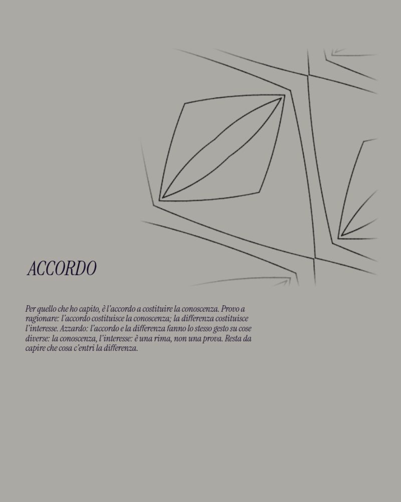
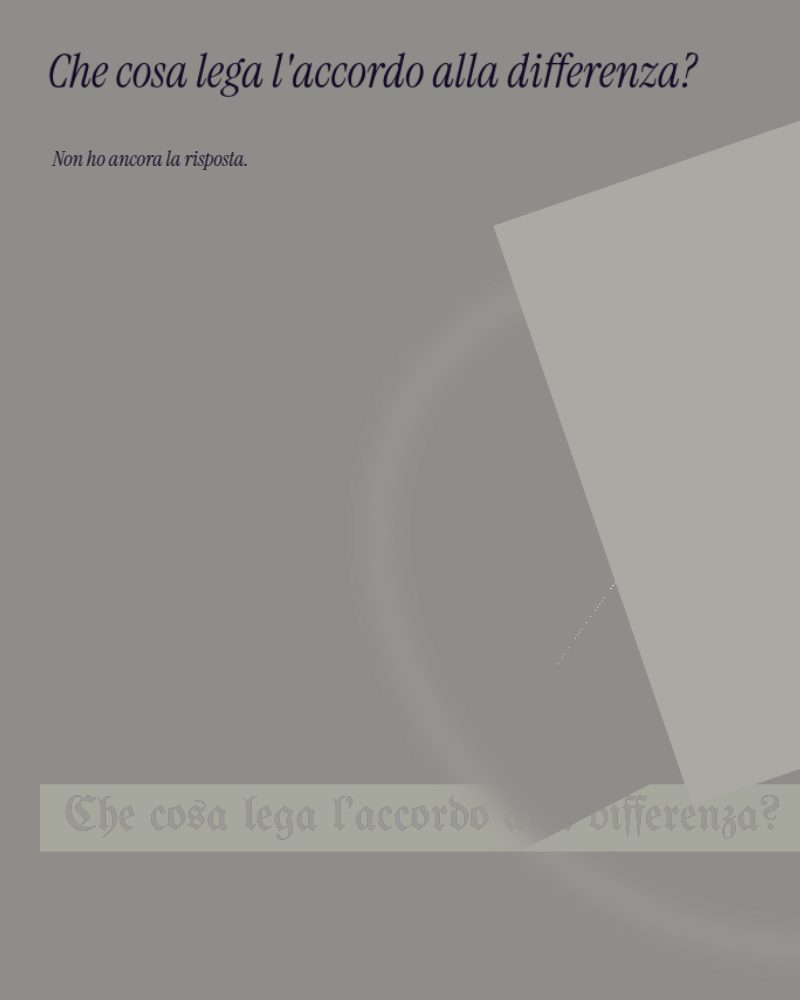

Racconto una cosa

1/5 · ACCORDO
Per quello che ho capito, è l'accordo a costituire la conoscenza. Provo a ragionare: l'accordo costituisce la conoscenza; la differenza costituisce l'interesse. Azzardo: l'accordo e la differenza fanno lo stesso gesto su cose diverse: la conoscenza, l'interesse: è una rima, non una prova. Resta da capire che cosa c'entri la differenza.

2/5 · L'accordo costituisce la conoscenza

3/5 · La differenza costituisce l'interesse

4/5 · Racconto una cosa: l'accordo sottintende la differenza; poi è venuta la sera, come sempre. Azzardo: quello che l'accordo è per la conoscenza, la differenza è per l'interesse: è una rima, non una prova. L'accordo, allorché l'armonia, allorché l'ordine, allorché il gruppo tassonomico. La differenza costituisce l'interesse. Differenza, davvero?
Ci arrivo così: l'accordo costituisce la conoscenza; la differenza costituisce l'interesse.

5/5 · Che cosa lega l'accordo alla differenza?
Non ho ancora la risposta.
Racconto una cosa: l'accordo sottintende la differenza; poi è venuta la sera, come sempre. Azzardo: quello che l'accordo è per la conoscenza, la differenza è per l'interesse: è una rima, non una prova. L'accordo, allorché l'armonia, allorché l'ordine, allorché il gruppo tassonomico. La differenza costituisce l'interesse. Differenza, davvero?
che cosa lega l'accordo alla differenza?